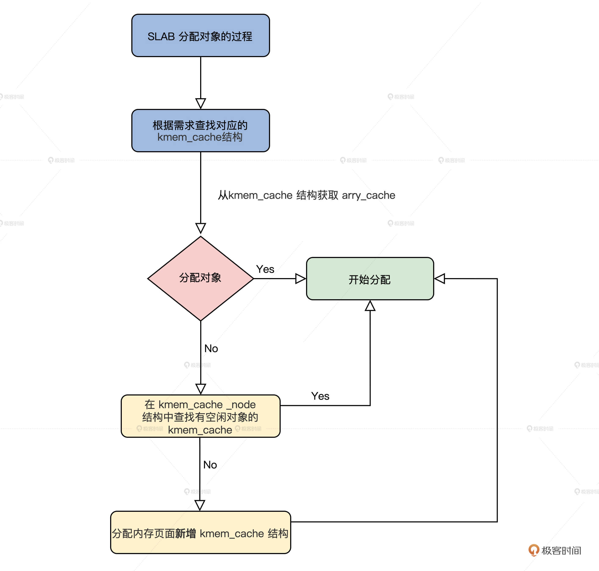

- 00 开篇词 为什么要学写一个操作系统？.md.html
- 00 编辑手记 升级认知，迭代自己的操作系统.md.html
- 01 程序的运行过程：从代码到机器运行.md.html
- 02 几行汇编几行C：实现一个最简单的内核.md.html
- 03 黑盒之中有什么：内核结构与设计.md.html
- 04 震撼的Linux全景图：业界成熟的内核架构长什么样？.md.html
- 05 CPU工作模式：执行程序的三种模式.md.html
- 06 虚幻与真实：程序中的地址如何转换？.md.html
- 07 Cache与内存：程序放在哪儿？.md.html
- 08 锁：并发操作中，解决数据同步的四种方法.md.html
- 09 瞧一瞧Linux：Linux的自旋锁和信号量如何实现？.md.html
- 10 设置工作模式与环境（上）：建立计算机.md.html
- 11 设置工作模式与环境（中）：建造二级引导器.md.html
- 12 设置工作模式与环境（下）：探查和收集信息.md.html
- 13 第一个C函数：如何实现板级初始化？.md.html
- 14 Linux初始化（上）：GRUB与vmlinuz的结构.md.html
- 15 Linux初始化（下）：从_start到第一个进程.md.html
- 16 划分土地（上）：如何划分与组织内存？.md.html
- 17 划分土地（中）：如何实现内存页面初始化？.md.html
- 18 划分土地（下）：如何实现内存页的分配与释放？.md.html
- 19 土地不能浪费：如何管理内存对象？.md.html
- 20 土地需求扩大与保障：如何表示虚拟内存？.md.html
- 21 土地需求扩大与保障：如何分配和释放虚拟内存？.md.html
- 22 瞧一瞧Linux：伙伴系统如何分配内存？.md.html
- 23 瞧一瞧Linux：SLAB如何分配内存？.md.html
- 24 活动的描述：到底什么是进程？.md.html
- 25 多个活动要安排（上）：多进程如何调度？.md.html
- 26 多个活动要安排（下）：如何实现进程的等待与唤醒机制？.md.html
- 27 瞧一瞧Linux：Linux如何实现进程与进程调度_.md.html
- 28 部门分类：如何表示设备类型与设备驱动？.md.html
- 29 部门建立：如何在内核中注册设备？.md.html
- 30 部门响应：设备如何处理内核I_O包？.md.html
- 31 瞧一瞧Linux：如何获取所有设备信息？.md.html
- 32 仓库结构：如何组织文件_.md.html
- 33 仓库划分：文件系统的格式化操作.md.html
- 34 仓库管理：如何实现文件的六大基本操作？.md.html
- 35 瞧一瞧Linux：虚拟文件系统如何管理文件？.md.html
- 36 从URL到网卡：如何全局观察网络数据流动？.md.html
- 37 从内核到应用：网络数据在内核中如何流转.md.html
- 38 从单排到团战：详解操作系统的宏观网络架构.md.html
- 39 瞧一瞧Linux：详解socket实现与网络编程接口.md.html
- 40 瞧一瞧Linux：详解socket的接口实现.md.html
- 41 服务接口：如何搭建沟通桥梁？.md.html
- 42 瞧一瞧Linux：如何实现系统API？.md.html
- 43 虚拟机内核：KVM是什么？.md.html
- 44 容器：如何理解容器的实现机制？.md.html
- 45 ARM新宠：苹果的M1芯片因何而快？.md.html
- 46 AArch64体系：ARM最新编程架构模型剖析.md.html
- LMOS来信：第二季课程带你“手撕”计算机基础.md.html
- 大咖助场 以无法为有法，以无限为有限.md.html
- 用户故事 yiyang：我的上机实验“爬坑指南”.md.html
- 用户故事 成为面向“知识库”的工程师.md.html
- 用户故事 技术人如何做选择，路才越走越宽？.md.html
- 用户故事 操作系统发烧友：看不懂？因为你没动手.md.html
- 用户故事 用好动态调试，助力课程学习.md.html
- 用户故事 艾同学：路虽远，行则将至.md.html
- 结束语 生活可以一地鸡毛，但操作系统却是心中的光.md.html
- 捐赠
23 瞧一瞧Linux：SLAB如何分配内存？
你好，我是LMOS。
上节课我们学习了伙伴系统，了解了它是怎样管理物理内存页面的。那么你自然会想到这个问题：Linux系统中，比页更小的内存对象要怎样分配呢？
带着这个问题，我们来一起看看SLAB分配器的原理和实现。在学习过程中，你也可以对照一下我们Cosmos的内存管理组件，看看两者的内存管理有哪些异同。
SLAB
与Cosmos物理内存页面管理器一样，Linux中的伙伴系统是以页面为最小单位分配的，现实更多要以内核对象为单位分配内存，其实更具体一点说，就是根据内核对象的实例变量大小来申请和释放内存空间，这些数据结构实例变量的大小通常从几十字节到几百字节不等，远远小于一个页面的大小。
如果一个几十字节大小的数据结构实例变量，就要为此分配一个页面，这无疑是对宝贵物理内存的一种巨大浪费，因此一个更好的技术方案应运而生，就是Slab分配器（由Sun公司的雇员Jeff Bonwick在Solaris 2.4中设计并实现）。
由于作者公开了实现方法，后来被Linux所借鉴，用于实现内核中更小粒度的内存分配。看看吧，你以为Linux很强大，真的强大吗？不过是站在巨人的肩膀上飞翔的。
走进SLAB对象
何为SLAB对象？在SLAB分配器中，它把一个内存页面或者一组连续的内存页面，划分成大小相同的块，其中这一个小的内存块就是SLAB对象，但是这一组连续的内存页面中不只是SLAB对象，还有SLAB管理头和着色区。
我画个图你就明白了，如下所示。

上图中有一个内存页面和两个内存页面的SLAB，你可能对着色区有点陌生，我来给你讲解一下。
这个着色区也是一块动态的内存块，建立SLAB时才会设置它的大小，目的是为了错开不同SLAB中的对象地址，降低硬件Cache行中的地址争用，以免导致Cache抖动效应，整个系统性能下降。
SLAB头其实是一个数据结构，但是它不一定放在保存对象内存页面的开始。通常会有一个保存SLAB管理头的SLAB，在Linux中，SLAB管理头用kmem_cache结构来表示，代码如下。
struct array_cache {
unsigned int avail;
unsigned int limit;
void *entry[];
};
struct kmem_cache {
//是每个CPU一个array_cache类型的变量，cpu_cache是用于管理空闲对象的
struct array_cache __percpu *cpu_cache;
unsigned int size; //cache大小
slab_flags_t flags;//slab标志
unsigned int num;//对象个数
unsigned int gfporder;//分配内存页面的order
gfp_t allocflags;
size_t colour;//着色区大小
unsigned int colour_off;//着色区的开始偏移
const char *name;//本SLAB的名字
struct list_head list;//所有的SLAB都要链接起来
int refcount;//引用计数
int object_size;//对象大小
int align;//对齐大小
struct kmem_cache_node *node[MAX_NUMNODES];//指向管理kmemcache的上层结构
};
上述代码中，有多少个CPU，就会有多少个array_cache类型的变量。这种为每个CPU构造一个变量副本的同步机制，就是每CPU变量（per-cpu-variable）。array_cache结构中”entry[]“表示了一个遵循LIFO顺序的数组，”avail”和”limit”分别指定了当前可用对象的数目和允许容纳对象的最大数目。

第一个kmem_cache
第一个kmem_cache是哪里来的呢？其实它是静态定义在代码中的，如下所示。
static struct kmem_cache kmem_cache_boot = {
.batchcount = 1,
.limit = BOOT_CPUCACHE_ENTRIES,
.shared = 1,
.size = sizeof(struct kmem_cache),
.name = "kmem_cache",
};
void __init kmem_cache_init(void)
{
int i;
//指向静态定义的kmem_cache_boot
kmem_cache = &kmem_cache_boot;
for (i = 0; i < NUM_INIT_LISTS; i++)
kmem_cache_node_init(&init_kmem_cache_node[i]);
//建立保存kmem_cache结构的kmem_cache
create_boot_cache(kmem_cache, "kmem_cache",
offsetof(struct kmem_cache, node) +
nr_node_ids * sizeof(struct kmem_cache_node *),
SLAB_HWCACHE_ALIGN, 0, 0);
//加入全局slab_caches链表中
list_add(&kmem_cache->list, &slab_caches);
{
int nid;
for_each_online_node(nid) {
init_list(kmem_cache, &init_kmem_cache_node[CACHE_CACHE + nid], nid);
init_list(kmalloc_caches[KMALLOC_NORMAL][INDEX_NODE], &init_kmem_cache_node[SIZE_NODE + nid], nid);
}
}
//建立kmalloc函数使用的的kmem_cache
create_kmalloc_caches(ARCH_KMALLOC_FLAGS);
}
管理kmem_cache
我们建好了第一个kmem_cache，以后kmem_cache越来越多，而且我们并没有看到kmem_cache结构中有任何指向内存页面的字段，但在kmem_cache结构中有个保存kmem_cache_node结构的指针数组。
kmem_cache_node结构是每个内存节点对应一个，它就是用来管理kmem_cache结构的，它开始是静态定义的，初始化时建立了第一个kmem_cache结构之后，init_list函数负责一个个分配内存空间，代码如下所示。
#define NUM_INIT_LISTS (2 * MAX_NUMNODES)
//定义的kmem_cache_node结构数组
static struct kmem_cache_node __initdata init_kmem_cache_node[NUM_INIT_LISTS];
struct kmem_cache_node {
spinlock_t list_lock;//自旋锁
struct list_head slabs_partial;//有一部分空闲对象的kmem_cache结构
struct list_head slabs_full;//没有空闲对象的kmem_cache结构
struct list_head slabs_free;//对象全部空闲kmem_cache结构
unsigned long total_slabs; //一共多少kmem_cache结构
unsigned long free_slabs; //空闲的kmem_cache结构
unsigned long free_objects;//空闲的对象
unsigned int free_limit;
};
static void __init init_list(struct kmem_cache *cachep, struct kmem_cache_node *list,
int nodeid)
{
struct kmem_cache_node *ptr;
//分配新的 kmem_cache_node 结构的空间
ptr = kmalloc_node(sizeof(struct kmem_cache_node), GFP_NOWAIT, nodeid);
BUG_ON(!ptr);
//复制初始时的静态kmem_cache_node结构
memcpy(ptr, list, sizeof(struct kmem_cache_node));
spin_lock_init(&ptr->list_lock);
MAKE_ALL_LISTS(cachep, ptr, nodeid);
//设置kmem_cache_node的地址
cachep->node[nodeid] = ptr;
}
我们第一次分配对象时，肯定没有对应的内存页面存放对象，那么SLAB模块就会调用cache_grow_begin函数获取内存页面，然后用获取的页面来存放对象，我们一起来看看代码。
static void slab_map_pages(struct kmem_cache *cache, struct page *page,void *freelist)
{
//页面结构指向kmem_cache结构
page->slab_cache = cache;
//指向空闲对象的链表
page->freelist = freelist;
}
static struct page *cache_grow_begin(struct kmem_cache *cachep,
gfp_t flags, int nodeid)
{
void *freelist;
size_t offset;
gfp_t local_flags;
int page_node;
struct kmem_cache_node *n;
struct page *page;
WARN_ON_ONCE(cachep->ctor && (flags & __GFP_ZERO));
local_flags = flags & (GFP_CONSTRAINT_MASK|GFP_RECLAIM_MASK);
//获取页面
page = kmem_getpages(cachep, local_flags, nodeid);
//获取页面所在的内存节点号
page_node = page_to_nid(page);
//根据内存节点获取对应kmem_cache_node结构
n = get_node(cachep, page_node);
//分配管理空闲对象的数据结构
freelist = alloc_slabmgmt(cachep, page, offset,
local_flags & ~GFP_CONSTRAINT_MASK, page_node);
//让页面中相关的字段指向kmem_cache和空闲对象
slab_map_pages(cachep, page, freelist);
//初始化空闲对象管理数据
cache_init_objs(cachep, page);
return page;
}
static void cache_grow_end(struct kmem_cache *cachep, struct page *page)
{
struct kmem_cache_node *n;
void *list = NULL;
if (!page)
return;
//初始化结page构的slab_list链表
INIT_LIST_HEAD(&page->slab_list);
//根据内存节点获取对应kmem_cache_node结构.
n = get_node(cachep, page_to_nid(page));
spin_lock(&n->list_lock);
//slab计数增加
n->total_slabs++;
if (!page->active) {
//把这个page结构加入到kmem_cache_node结构的空闲链表中
list_add_tail(&page->slab_list, &n->slabs_free);
n->free_slabs++;
}
spin_unlock(&n->list_lock);
}
上述代码中的注释已经很清楚了，cache_grow_begin函数会为kmem_cache结构分配用来存放对象的页面，随后会调用与之对应的cache_grow_end函数，把这页面挂载到kmem_cache_node结构的链表中，并让页面指向kmem_cache结构。
这样kmem_cache_node，kmem_cache，page这三者之间就联系起来了。你再看一下后面的图，就更加清楚了。

上图中page可能是一组连续的pages，但是只会把第一个page挂载到kmem_cache_node中，同时，在slab_map_pages函数中又让page指向了kmem_cache。
但你要特别留意kmem_cache_node中的三个链表，它们分别挂载的pages，有一部分是空闲对象的page、还有对象全部都已经分配的page，以及全部都为空闲对象的page。这是为了提高分配时查找kmem_cache的性能。
SLAB分配对象的过程
有了前面对SLAB数据结构的了解，SLAB分配对象的过程你自己也能推导出来，无非是根据请求分配对象的大小，查找对应的kmem_cache结构，接着从这个结构中获取arry_cache结构，然后分配对象。
如果没有空闲对象了，就需要在kmem_cache对应的kmem_cache_node结构中查找有空闲对象的kmem_cache。如果还是没找到，最后就要分配内存页面新增kmem_cache结构了。

下面我们从接口开始了解这些过程。
SLAB分配接口
其实在Linux内核中，用的最多的是kmalloc函数，经常用于分配小的缓冲区，或者数据结构分配实例空间，这个函数就是SLAB分配接口，它是用来分配对象的，这个对象就是一小块内存空间。
下面一起来看看代码。
static __always_inline void *__do_kmalloc(size_t size, gfp_t flags,unsigned long caller)
{
struct kmem_cache *cachep;
void *ret;
if (unlikely(size > KMALLOC_MAX_CACHE_SIZE))
return NULL;
//查找size对应的kmem_cache
cachep = kmalloc_slab(size, flags);
if (unlikely(ZERO_OR_NULL_PTR(cachep)))
return cachep;
//分配对象
ret = slab_alloc(cachep, flags, caller);
return ret;
}
void *__kmalloc(size_t size, gfp_t flags)
{
return __do_kmalloc(size, flags, _RET_IP_);
}
static __always_inline void *kmalloc(size_t size, gfp_t flags)
{
return __kmalloc(size, flags);
}
上面代码的流程很简单，就是在__do_kmalloc函数中，查找出分配大小对应的kmem_cache结构，然后调用slab_alloc函数进行分配。可以说，slab_alloc函数才是SLAB的接口函数，但是它的参数中必须要有kmem_cache结构。
具体是如何查找的呢？我们这就来看看。
如何查找kmem_cache结构
由于SLAB的接口函数slab_alloc，它的参数中必须要有kmem_cache结构指针，指定从哪个kmem_cache结构分配对象，所以在调用slab_alloc函数之前必须给出kmem_cache结构。
我们怎么查找到它呢？这就需要调用kmalloc_slab函数了，代码如下所示。
enum kmalloc_cache_type {
KMALLOC_NORMAL = 0,
KMALLOC_RECLAIM,
#ifdef CONFIG_ZONE_DMA
KMALLOC_DMA,
#endif
NR_KMALLOC_TYPES
};
struct kmem_cache *kmalloc_caches[NR_KMALLOC_TYPES][KMALLOC_SHIFT_HIGH + 1] __ro_after_init ={ static u8 size_index[24] __ro_after_init = {
3, /* 8 */
4, /* 16 */
5, /* 24 */
5, /* 32 */
6, /* 40 */
6, /* 48 */
6, /* 56 */
6, /* 64 */
1, /* 72 */
1, /* 80 */
1, /* 88 */
1, /* 96 */
7, /* 104 */
7, /* 112 */
7, /* 120 */
7, /* 128 */
2, /* 136 */
2, /* 144 */
2, /* 152 */
2, /* 160 */
2, /* 168 */
2, /* 176 */
2, /* 184 */
2 /* 192 */
};
//根据分配标志返回枚举类型，其实是0、1、2其中之一
static __always_inline enum kmalloc_cache_type kmalloc_type(gfp_t flags)
{
#ifdef CONFIG_ZONE_DMA
if (likely((flags & (__GFP_DMA | __GFP_RECLAIMABLE)) == 0))
return KMALLOC_NORMAL;
return flags & __GFP_DMA ? KMALLOC_DMA : KMALLOC_RECLAIM;
#else
return flags & __GFP_RECLAIMABLE ? KMALLOC_RECLAIM : KMALLOC_NORMAL;
#endif
}
struct kmem_cache *kmalloc_slab(size_t size, gfp_t flags)
{
unsigned int index;
//计算出index
if (size <= 192) {
if (!size)
return ZERO_SIZE_PTR;
index = size_index[size_index_elem(size)];
} else {
if (WARN_ON_ONCE(size > KMALLOC_MAX_CACHE_SIZE))
return NULL;
index = fls(size - 1);
}
return kmalloc_caches[kmalloc_type(flags)][index];
}
从上述代码，不难发现kmalloc_caches就是个全局的二维数组，kmalloc_slab函数只是根据分配大小和分配标志计算出了数组下标，最后取出其中kmem_cache结构指针。
那么kmalloc_caches中的kmem_cache，它又是谁建立的呢？我们还是接着看代码。
struct kmem_cache *__init create_kmalloc_cache(const char *name,
unsigned int size, slab_flags_t flags,
unsigned int useroffset, unsigned int usersize)
{
//从第一个kmem_cache中分配一个对象放kmem_cache
struct kmem_cache *s = kmem_cache_zalloc(kmem_cache, GFP_NOWAIT);
if (!s)
panic("Out of memory when creating slab %s\n", name);
//设置s的对齐参数，处理s的freelist就是arr_cache
create_boot_cache(s, name, size, flags, useroffset, usersize);
list_add(&s->list, &slab_caches);
s->refcount = 1;
return s;
}
//新建一个kmem_cache
static void __init new_kmalloc_cache(int idx, enum kmalloc_cache_type type, slab_flags_t flags)
{
if (type == KMALLOC_RECLAIM)
flags |= SLAB_RECLAIM_ACCOUNT;
//根据kmalloc_info中信息建立一个kmem_cache
kmalloc_caches[type][idx] = create_kmalloc_cache(
kmalloc_info[idx].name[type],
kmalloc_info[idx].size, flags, 0,
kmalloc_info[idx].size);
}
//建立所有的kmalloc_caches中的kmem_cache
void __init create_kmalloc_caches(slab_flags_t flags)
{
int i;
enum kmalloc_cache_type type;
for (type = KMALLOC_NORMAL; type <= KMALLOC_RECLAIM; type++) {
for (i = KMALLOC_SHIFT_LOW; i <= KMALLOC_SHIFT_HIGH; i++) {
if (!kmalloc_caches[type][i])
//建立一个新的kmem_cache
new_kmalloc_cache(i, type, flags);
if (KMALLOC_MIN_SIZE <= 32 && i == 6 &&
!kmalloc_caches[type][1])
new_kmalloc_cache(1, type, flags);
if (KMALLOC_MIN_SIZE <= 64 && i == 7 &&
!kmalloc_caches[type][2])
new_kmalloc_cache(2, type, flags);
}
}
}
到这里，__do_kmalloc函数中根据分配对象大小查找的所有kmem_cache结构，我们就建立好了，保存在kmalloc_caches数组中。下面我们再去看看对象是如何分配的。
分配对象
下面我们从slab_alloc函数开始探索对象的分配过程，slab_alloc函数的第一个参数就kmem_cache结构的指针，表示从该kmem_cache结构中分配对象。
static __always_inline void *slab_alloc(struct kmem_cache *cachep, gfp_t flags, unsigned long caller)
{
unsigned long save_flags;
void *objp;
//关中断
local_irq_save(save_flags);
//分配对象
objp = __do_cache_alloc(cachep, flags);
//恢复中断
local_irq_restore(save_flags);
return objp;
}
接口函数总是简单的，真正干活的是__do_cache_alloc函数，下面我们就来看看这个函数。
static inline void *____cache_alloc(struct kmem_cache *cachep, gfp_t flags)
{
void *objp;
struct array_cache *ac;
//获取当前cpu在cachep结构中的array_cache结构的指针
ac = cpu_cache_get(cachep);
//如果ac中的avail不为0,说明当前kmem_cache结构中freelist是有空闲对象
if (likely(ac->avail)) {
ac->touched = 1;
//空间对象的地址保存在ac->entry
objp = ac->entry[--ac->avail];
goto out;
}
objp = cache_alloc_refill(cachep, flags);
out:
return objp;
}
static __always_inline void *__do_cache_alloc(struct kmem_cache *cachep, gfp_t flags)
{
return ____cache_alloc(cachep, flags);
}
上述代码中真正做事的函数是____cache_alloc函数，它首先获取了当前kmem_cache结构中指向array_cache结构的指针，找到它里面空闲对象的地址（如果你不懂array_cache结构，请回到SLAB对象那一小节复习），然后在array_cache结构中取出一个空闲对象地址返回，这样就分配成功了。
这个速度是很快的，如果array_cache结构中没有空闲对象了，就会调用cache_alloc_refill函数。那这个函数又干了什么呢？我们接着往下看。代码如下所示。
static struct page *get_first_slab(struct kmem_cache_node *n, bool pfmemalloc)
{
struct page *page;
assert_spin_locked(&n->list_lock);
//首先从kmem_cache_node结构中的slabs_partial链表上查看有没有page
page = list_first_entry_or_null(&n->slabs_partial, struct page,slab_list);
if (!page) {
//如果没有
n->free_touched = 1;
//从kmem_cache_node结构中的slabs_free链表上查看有没有page
page = list_first_entry_or_null(&n->slabs_free, struct page,slab_list);
if (page)
n->free_slabs--; //空闲slab计数减一
}
//返回page
return page;
}
static void *cache_alloc_refill(struct kmem_cache *cachep, gfp_t flags)
{
int batchcount;
struct kmem_cache_node *n;
struct array_cache *ac, *shared;
int node;
void *list = NULL;
struct page *page;
//获取内存节点
node = numa_mem_id();
ac = cpu_cache_get(cachep);
batchcount = ac->batchcount;
//获取cachep所属的kmem_cache_node
n = get_node(cachep, node);
shared = READ_ONCE(n->shared);
if (!n->free_objects && (!shared || !shared->avail))
goto direct_grow;
while (batchcount > 0) {
//获取kmem_cache_node结构中其它kmem_cache,返回的是page，而page会指向kmem_cache
page = get_first_slab(n, false);
if (!page)
goto must_grow;
batchcount = alloc_block(cachep, ac, page, batchcount);
}
must_grow:
n->free_objects -= ac->avail;
direct_grow:
if (unlikely(!ac->avail)) {
//分配新的kmem_cache并初始化
page = cache_grow_begin(cachep, gfp_exact_node(flags), node);
ac = cpu_cache_get(cachep);
if (!ac->avail && page)
alloc_block(cachep, ac, page, batchcount);
//让page挂载到kmem_cache_node结构的slabs_list链表上
cache_grow_end(cachep, page);
if (!ac->avail)
return NULL;
}
ac->touched = 1;
//重新分配
return ac->entry[--ac->avail];
}
调用cache_alloc_refill函数的过程，主要的工作都有哪些呢？我给你梳理一下。
首先，获取了cachep所属的kmem_cache_node。
然后调用get_first_slab，获取kmem_cache_node结构还有没有包含空闲对象的kmem_cache。但是请注意，这里返回的是page，因为page会指向kmem_cache结构，page所代表的物理内存页面，也保存着kmem_cache结构中的对象。
最后，如果kmem_cache_node结构没有包含空闲对象的kmem_cache了，就必须调用cache_grow_begin函数，找伙伴系统分配新的内存页面，而且还要找第一个kmem_cache分配新的对象，来存放kmem_cache结构的实例变量，并进行必要的初始化。
这些步骤完成之后，再调用cache_grow_end函数，把刚刚分配的page挂载到kmem_cache_node结构的slabs_list链表上。因为cache_grow_begin和cache_grow_end函数在前面已经分析过了，这里不再赘述。
重点回顾
今天的内容讲完了，我来帮你梳理一下本课程的重点。
1.为了分配小于1个page的小块内存，Linux实现了SLAB，用kmem_cache结构管理page对应内存页面上小块内存对象，然后让该page指向kmem_cache，由kmem_cache_node结构管理多个page。
2.我们从Linux内核中使用的kmalloc函数入手，了解了SLAB下整个内存对象的分配过程。
到此为止，我们对SLAB的研究就告一段落了，是不是感觉和Cosmos内存管理有些相像而又不同呢？甚至我们Cosmos内存管理要更为简洁和高效。
思考题
Linux的SLAB，使用kmalloc函数能分配多大的内存对象呢？
欢迎你在留言区跟我交流互动，也欢迎你把这节课分享给你的同事、朋友，跟他一起研究SLAB相关的内容。
我是LMOS，我们下节课见！
© 2019 - 2023 Liangliang Lee. Powered by gin and hexo-theme-book.